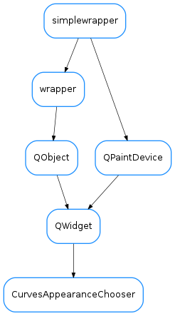

CurvesAppearanceChooser¶

-
class
CurvesAppearanceChooser(parent=None, curvePropDict={}, showButtons=False, autoApply=False, designMode=False)[source]¶ Bases:
PyQt4.QtGui.QWidgetA widget for choosing plot appearance for one or more curves. The current curves properties are passed using the setCurves() method using a dictionary with the following structure:
curvePropDict={name1:prop1, name2:prop2,...}
where propX is an instance of
CurveAppearancePropertiesWhen applying, a signal is emitted and the chosen properties are made available in a similar dictionary.-
CurveTitleEdited¶
-
NAME_ROLE= 32¶
-
controlChanged¶
-
curveAppearanceChanged¶
-
getSelectedCurveNames()[source]¶ Returns the curve names for the curves selected at the curves list.
Note: The names may differ from the displayed text, which corresponds to the curve titles (this method is what you likely need if you want to get keys to use in curves or curveProp dicts).
Return type: string_listReturns: the names of the selected curves
-
getShownProperties()[source]¶ Returns a copy of the currently shown properties and updates self._shownProp
Return type: CurveAppearancePropertiesReturns:
-
loadUi(filename=None, path=None)¶
-
onApply()[source]¶ Apply does 2 things:
- It updates self.curvePropDict using the current values choosen in the dialog
- It emits a curveAppearanceChanged signal that indicates the names of the curves that changed and the new properties. (The names and the properties are returned by the function as well)
Return type: tuple<CurveAppearanceProperties,list>Returns: a tuple containing the curve properties and a list of the selected curve names (as a list<str>)
-
onControlChanged(*args)[source]¶ slot to be called whenever a control widget is changed. It emmits a ‘controlChanged signal and applies the change if in autoapply mode. It ignores any arguments passed
-
onReset()[source]¶ slot to be called when the reset action is triggered. It reverts to the original situation
-
setCurves(curvePropDict)[source]¶ Populates the list of curves from the properties dictionary. It uses the curve title for display, and stores the curve name as the item data (with role=CurvesAppearanceChooser.NAME_ROLE)
Parameters: curvePropDict ( dict) – a dictionary whith keys=curvenames and values=CurveAppearancePropertiesobject
-
showProperties(prop=None)[source]¶ Updates the dialog to show the given properties.
Parameters: prop ( CurveAppearanceProperties) – the properties object containing what should be shown. If a given property is set to None, the corresponding widget will show a “neutral” display
-